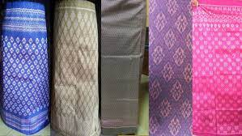
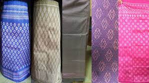
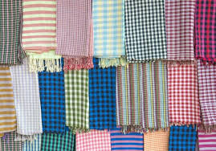
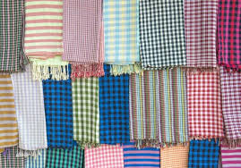
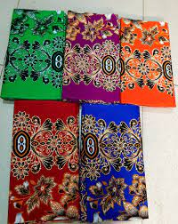
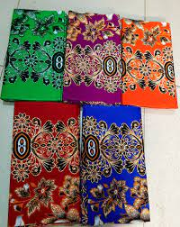

Traditional Khmer clothing is both beautiful and functional. The styles have been shaped by Cambodia's hot tropical climate, as well as its cultural traditions. Both men and women wear loose, lightweight clothing made of natural fibers and natural material like cotton or silk. Bright colors and intricate details showcase the skill of Khmer weavers and tailors. The most well-known traditional garment is the sampot, a wrap-around lower garment worn by both men and women. The sampot phamoong, worn by women, is a rectangular fabric wrapped around the waist and pinned at the top to create a skirt. Men wear the sampot kben, which is tucked in and held up by a belt called a krama. The sampot comes in colorful checkered patterns or colorful floral silk brocades.
The sampot change kben is a full, ankle length skirt. It's made of silk and decorated with floral or geomatric paterns. Women wear this for special occasions like weddings or festival. The sampot chang phnom is a knee-length cotton skirt. It's move casual and worn for everday activities. The sampot is wrapped around the waist and secured in place with a belt called a kroma.
 


A kroma is a checked scarf that serves many purposes in Khmer clothing. Women use it as a belt to hold the sampot in place. Men wear the known around their wairst to neck. The kroma also has many practical uses. Like as a towel, basket, or hammock. They come in red, blue or green checkered patterns.
 


A sarong is a large piece of patterned fabric used by Khmer people of all genders. It has many uses, such as: A wrap for women to wear over a sleeveless top. A towel for bathing. A blanket. A hammock or mat to sit on.
 


The angkor shirt is a loose-fitting silk or cotton button-down shirt. It's a worn by both men and women, and often paired with trousers or a sampot. Angkor shirts feature delicate embroidery, especially around the collar and cuffs. They are popular souveneirs for tourists visiting Cambodia.